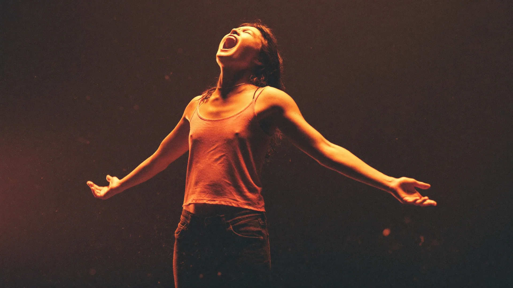
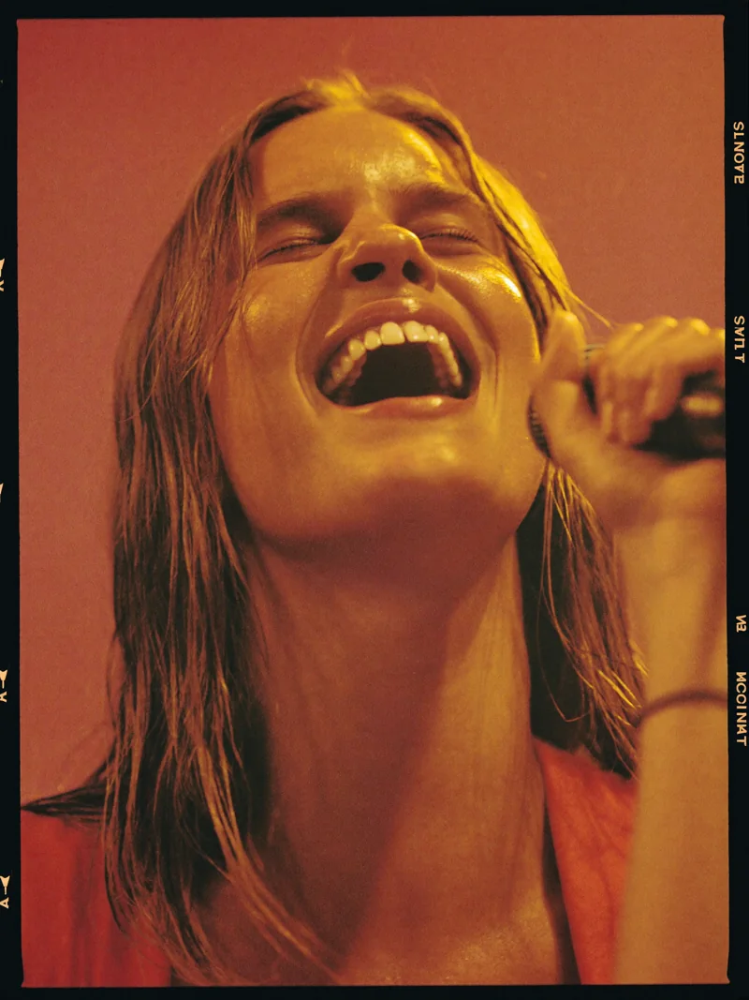
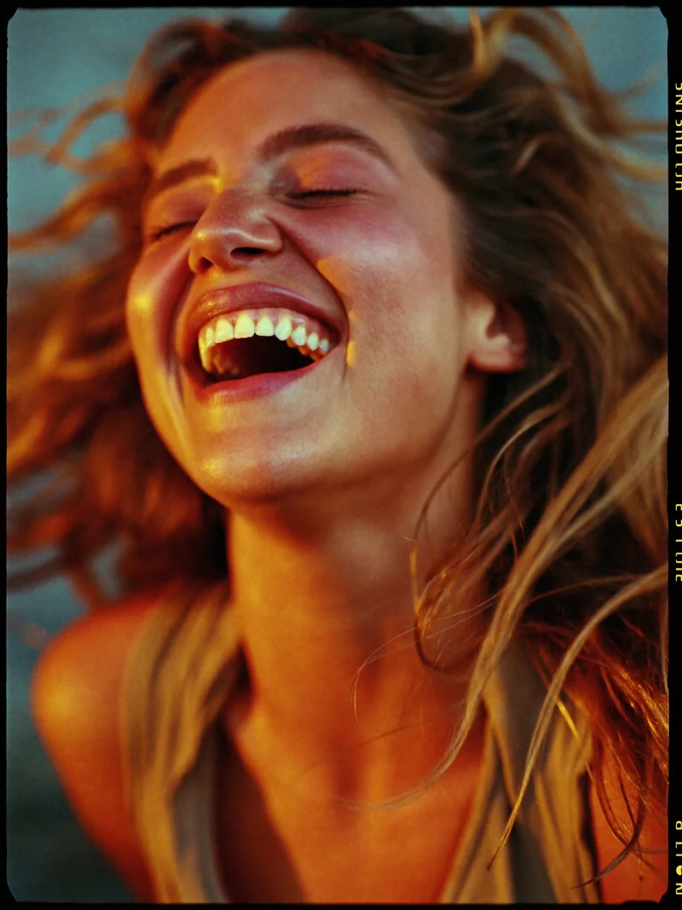
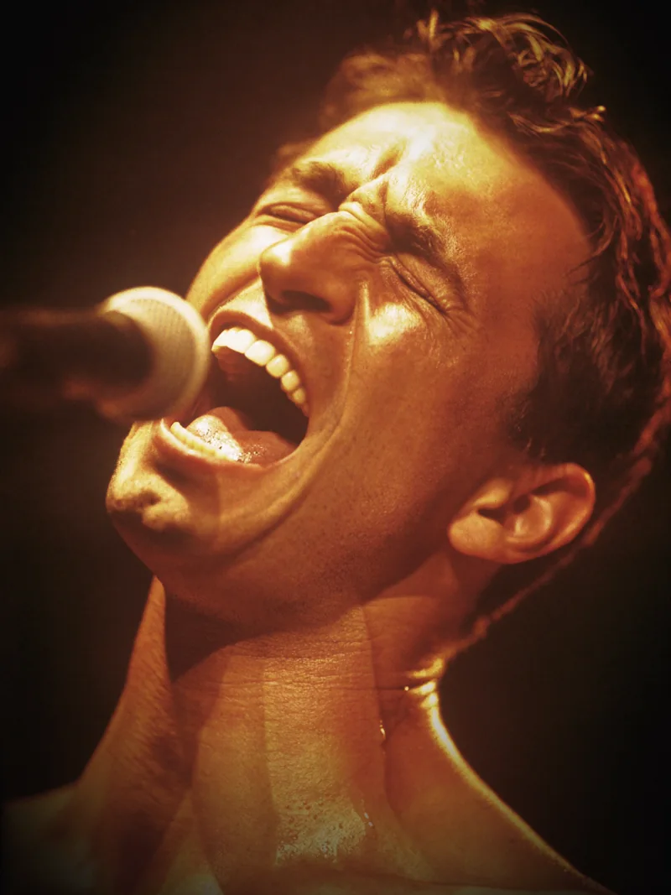
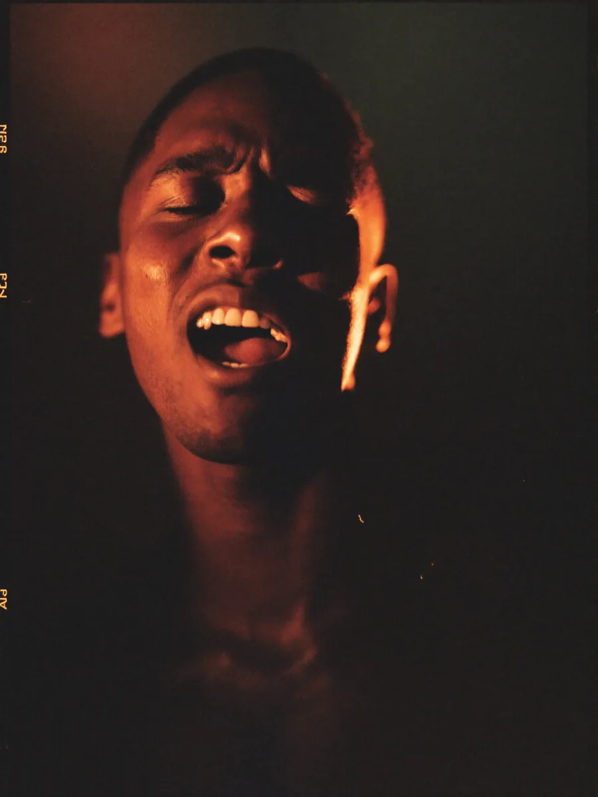
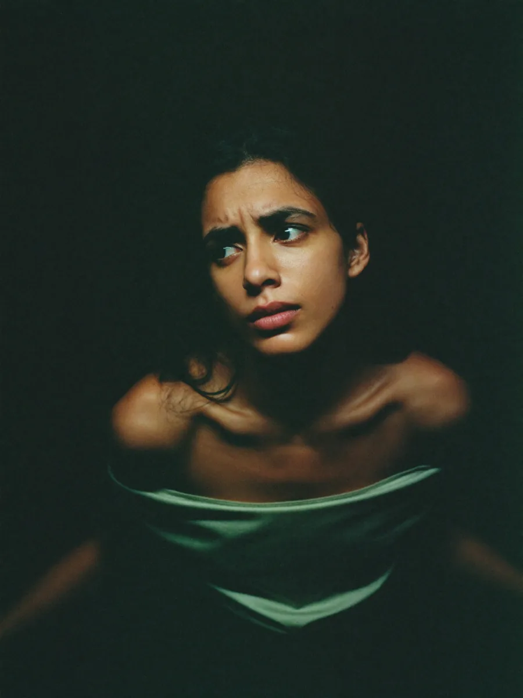
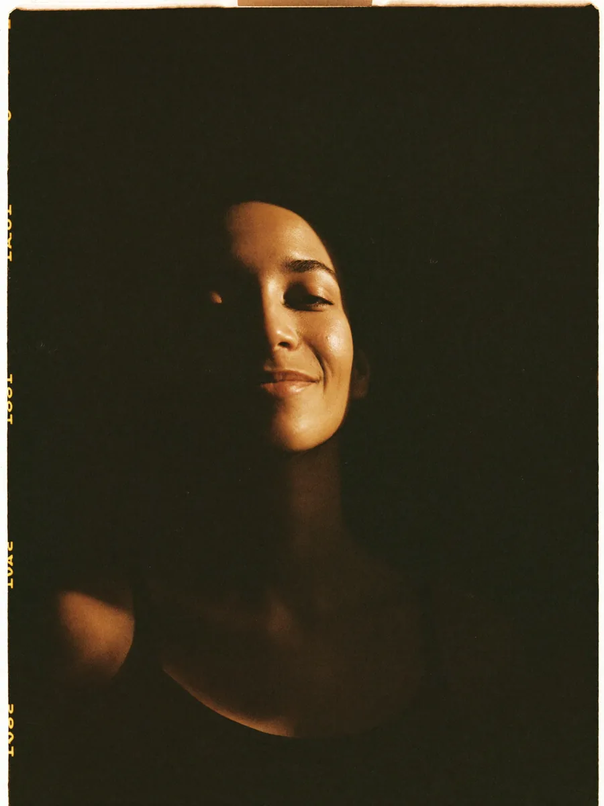
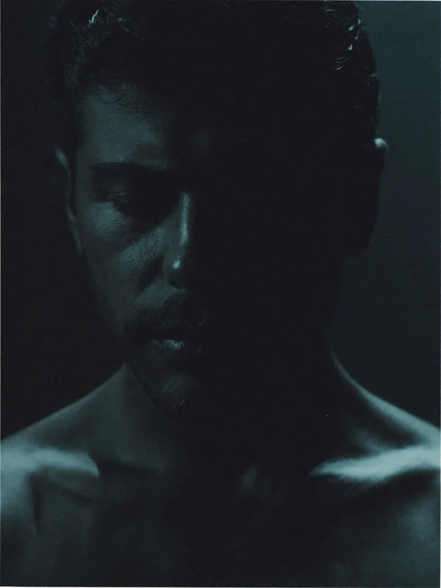

Вокал
Вокальная позиция, опора, прогрев, высокие ноты, бэлт, микст, субтон, дикция. Индивидуально и в малых группах.
Школа вокала и свободного голоса. Научим петь, говорить и звучать уверенно — и через голос раскроем тебя настоящего.
Прояви — команда музыкантов, психологов и практиков. 6–8 недель индивидуальной работы с твоим голосом.
Вокал · сценическая речь · работа перед камерой · психология проявленности.
Бесплатно · онлайн · без обязательств
Чему здесь учат и что прорабатывают. Начинаешь с вокала — а дальше под тебя собирают маршрут из шести направлений. Всё вокруг одного: чтобы ты звучал собой.

«В тот момент, когда ты
наконец звучишь — себя не спрятать»
Голос — не вокальная мышца. Это то, через что ты вообще существуешь среди людей.
Когда он свободен — свободен ты.
Когда зажат — ты тоже.
Мы не учим петь.
Мы возвращаем тебе твой звук.
Голос — самый честный диагностический инструмент. Он показывает, где ты зажат, где боишься, где себя не слышишь.
Свобода голоса — это свобода тела плюс свобода психики. Поэтому мы работаем со всеми тремя слоями одновременно.
Это про то, чтобы звучать собой. Тихо или ярко — твой выбор. Но звучать своим звуком, а не чьим-то.
Если откликнулось хоть одно — это не «характер такой». Это голосовые и телесные зажимы. И хорошая новость: они снимаются. Системно, под руководством команды.





Не «петь правильно». А перестать сдерживаться — голосом, телом, собой.
Под тебя подберём маршрут. С чего стартовать, что добавить, что отложить — решаем после бесплатной диагностики.
Вокальная позиция, опора, прогрев, высокие ноты, бэлт, микст, субтон, дикция. Индивидуально и в малых группах.
Дикция, артикуляция, темп, интонация. Для тех, кто говорит публично или ведёт встречи.
Как держаться в кадре, голос для Reels, мимика, «я в порядке здесь и сейчас».
Страх осуждения, перфекционизм, имидж артиста, личные границы. С психологом по самовыражению.
Соматика, дыхание, голосовые медитации. Снимаем физические зажимы, блокирующие голос.
Для тех, кто пройдёт путь — продакшн в студии: аранжировка, запись, мастеринг. От первой ноты до релиза.
Прояви — это не курс. Это маршрут.
Мы не выдаём план «35 уроков и диплом». Мы собираем под тебя индивидуальную программу — какие из шести направлений тебе важны, в каком порядке, с какими специалистами.
У одного — вокал плюс психолог. У другого — речь плюс камера плюс соматика. У третьего — все шесть параллельно с финалом в виде записанной песни.
Один путь — твой звук.
Шесть способов туда дойти.
Не один лицевой бренд, а команда практикующих специалистов — действующие музыканты, психологи и кураторы с многолетним опытом. Под тебя подбираем тех, с кем стартует лучше всего.


Можно найти репетитора по вокалу за час. Но «петь по нотам» и «зазвучать собой» — разные вещи. Вот чем мы другие.
Вокалисты, психологи, практики, кураторы по речи и камере. Под тебя собирают маршрут из тех, с кем стартует лучше всего — а не «как у всех».
Мы не гоняем гаммы ради гамм. Вокал, речь, тело и психика идут вместе — поэтому свобода приходит быстрее, чем на обычных уроках.
Твой маршрут развития, сообщество, кейсы до/после, возможность записать свою песню. Ты растёшь в среде, а не остаёшься один на один с заданием.
Не важно, с чего ты начинаешь. Маршрут собираем под твою историю — а не подгоняем тебя под «программу для всех».
«Внутри есть, наружу не выходит». Голос — способ выйти из тупика и снова почувствовать что ты живой.
Карьера в порядке, но ощущение зажатости. Хочешь публичности, но боишься. Хочешь говорить от себя — не от роли.
Знаешь что говорить, но не можешь записать видео без 15 дублей. Камера парализует. Голос «не твой».
Без чёткого «зачем». Через голос — самый прямой способ найти. Голос не врёт, в отличие от слов.
Истории учеников — что было до и что стало после. Карта проявленности замеряется в начале и в конце маршрута.


Было СталоРаньше я говорила тихо и быстро, чтобы скорее замолчать. Сейчас я выступаю и веду свой канал — и впервые слышу себя.
| Свобода голоса | 2 → 5 +3 |
| Свобода тела | 3 → 5 +2 |
| Контакт с собой | 2 → 4 +2 |
| Выражение | 1 → 4 +3 |
| Границы | 2 → 4 +2 |
| Публичность | 1 → 5 +4 |

Было СталоЯ думал — мне нужны уроки вокала. Оказалось, мне нужны были и психолог, и практик, и педагог. Сейчас записал свою песню.
| Свобода голоса | 1 → 4 +3 |
| Свобода тела | 2 → 4 +2 |
| Контакт с собой | 3 → 5 +2 |
| Выражение | 2 → 5 +3 |
| Границы | 3 → 5 +2 |
| Публичность | 2 → 4 +2 |
Камера меня парализовывала. Сейчас я веду блог 4 раза в неделю и понимаю — у меня просто не было голоса.
| Свобода голоса | 2 → 5 +3 |
| Свобода тела | 1 → 4 +3 |
| Контакт с собой | 2 → 5 +3 |
| Выражение | 3 → 5 +2 |
| Границы | 2 → 4 +2 |
| Публичность | 3 → 5 +2 |
Оцени каждое утверждение по шкале — насколько это про тебя сейчас. В конце увидишь свою карту и поймёшь, с чего начинать.
Это полноценная консультация с куратором — обычно такой разбор платный. Здесь — бесплатно. И ты уходишь с конкретикой, даже если дальше не пойдёшь учиться.
Разберём 6 граней проявленности по шкале — свобода голоса, тела, контакт с собой, выражение, границы и готовность звучать на людях. Увидишь себя в цифрах.
Поймёшь, что держит твой голос — дыхание, тело, страх оценки или техника. Почти всегда причина не там, где кажется.
Что внедрить в первую очередь, что — потом. Конкретные упражнения и шаги под твою цель, а не «программа для всех».
Соберём маршрут на ближайший месяц и подберём, с кем стартовать — вокалист, психолог или практик. Уйдёшь с первым конкретным шагом.
Почему это не продающий звонок
Бесплатно · онлайн · ни к чему не обязывает.
Бесплатная диагностика — без давления и продаж в звонке. Куратор задаёт вопросы по нашей карте проявленности и подбирает специалиста.
Имя, мессенджер, одно предложение «что хочешь раскрыть». Минимум полей — займёт минуту.
Спокойный созвон с куратором. Без продаж и давления — он задаёт вопросы по карте проявленности и слушает.
Твоя карта проявленности, приоритеты на месяц и подобранный специалист, с которого старт.
От «попробовать» до «дойти до результата». Что подойдёт именно тебе и сколько это стоит — куратор покажет на бесплатной диагностике, без навязывания.
Для тех, кто хочет «попробовать прежде чем».
Для тех, кто решил пройти путь.
Для тех, кто решил дойти до результата.
Если твой вопрос не покрыт здесь — куратор ответит на бесплатной диагностике.
Прояви — международная программа. Юрлицо зарегистрировано в Таиланде. Работаем с учениками онлайн из любой точки мира. В команде — практикующие музыканты, психологи и кураторы. Не «школа имени одного человека», а сообщество специалистов вокруг общей идеи.
Если хоть что-то здесь откликнулось — начни с бесплатной диагностики. Онлайн, с живым куратором — и ты уже будешь знать, с чего раскрывать свой голос.
Записаться на диагностикуС тобой свяжется куратор в течение дня — будем настраивать звук.